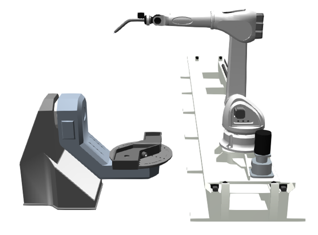
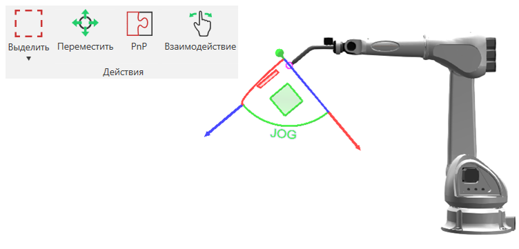
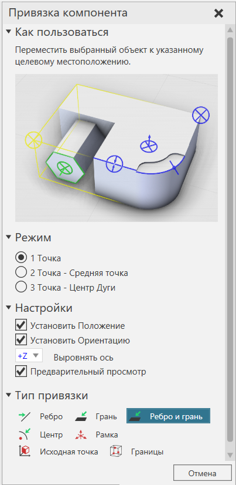
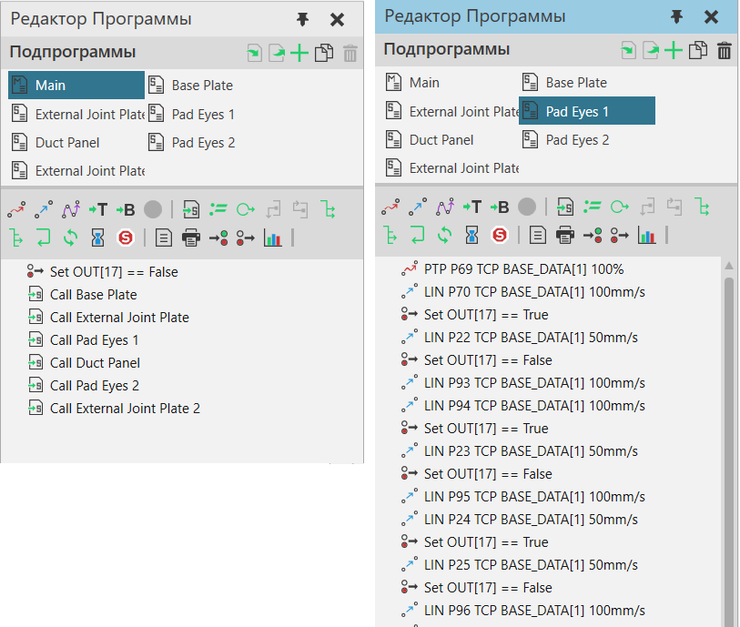

Если вы хотите запрограммировать робота в трехмерном мире, щелкните вкладку Программирование, чтобы получить доступ к представлению Робот.

Если вы хотите взаимодействовать с роботом и программировать его:
·На Ленте перейдите в группу Действия, а затем щелкните команду Взаимодействие. Это позволяет перемещать оси робота и использовать манипулятор для перемещения робота относительно его центральной точки инструмента (TCP).

Когда команда Взаимодействие активна, вы можете использовать панель Взаимодействие для настройки робота, а также для редактирования настроек манипулятора робота. Например, панель Взаимодействие позволяет определить активную TCP робота, а также фильтры привязки для обнаружения и привязки TCP к типам местоположений в трехмерном мире.

Примечание: Команды "Привязка" и "Выровнять" работают так же, как и на главной вкладке, за исключением того, что вы привязываете активную TCP текущего робота.

Если вы хотите получить доступ к программе робота и отредактировать ее, используйте команду Взаимодействие, чтобы напрямую выбрать робота и отобразить его программу на панели Редактора Программ. Движения робота в программе могут буть разбиты на подпрограммы. У каждого робота есть процедура Main, которую можно использовать для выполнения инструкций и вызова подпрограмм.

Программа робота сохраняется вместе с сохранением планировки.